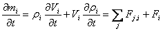
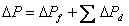
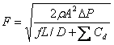
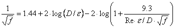
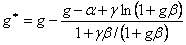

The theory of flows in ducts (and pipes) is well established and summarized in Chapter 35 of the 2005 ASHRAE Fundamentals Handbook [ASHRAE 2005] and treated more extensively in [Blevins 1984] in a chapter on pipe and duct flow. See the Duct Fitting Database [ASHRAE 2002] for extensive data on dynamic losses in duct fittings. Analysis is based on Bernoulli's equation and its assumptions. The friction losses in a section of duct or pipe are given by
|
 |
(47) |
where
f = friction factor,
L = duct length, and
D = hydraulic diameter.
The dynamic losses due to fittings and so forth are given by
|
|
(48) |
where Cd = dynamic loss coefficient. Total pressure losses are given by
|
 |
(49) |
Since F = rVA, where A is the cross section (or flow) area,
|
 |
(50) |
CONTAM calculates the friction factor using the nonlinear Colebrook equation [ASHRAE 2001, p 2.9, eqn. 29b]:
|
 |
(51) |
where
e = roughness dimension, and
Re = Reynolds number = rVD/m = FD/mA.
This nonlinear equation may be readily solved using the following iterative expression derived from equation (51) by Newton's method:
|
 |
(52) |
where
g = f -1/2,
a = 1.14 - g ln(e/D),
ß = 9.3/(Re·e/D), and
g = 2·log(e) = 0.868589.
The convergent solution is achieved in 2 or 3 iterations of equation (52) using g = a as a starting value. If the value of g has been saved from the previous time it was computed for a particular duct element, and the flow rate has not changed greatly, only one iteration of equation (52) will be needed to compute the friction factor.
The exact derivatives of equation (50) are difficult to compute, so CONTAM uses a secant approximation. The derivatives suffer the standard problem of powerlaw equations, i.e., they go undefined as DP approaches zero. This is solved in CONTAM by the linear approximation (22) with the coefficient computed to give the same flow as equation (50) at the user specified transition Reynolds number (default = 2000). A more detailed description of the flow in the laminar region could be developed, but that would probably exceed the level of detail with which the rest of the problem is described in CONTAM.
Terminal Loss Calculation
In CONTAM, duct terminals are essentially zero-length ducts characterized by an equivalent loss coefficient that is determined during simulation from the properties of the terminal, Ct and Cb, and the schedule or control signal (S) acting upon the terminal.
Ce = Ct + Cb + (1-S)/S
where
Ct = terminal loss coefficient
Cb= terminal balance coefficient
Sc = schedule or control signal acting upon the terminal
S = max(1x10-6, Sc1)
Sc1= min(1, Sc)
Using this technique, an input signal Sc of 0.0 will effect a very high loss coefficient, that of 1.0 will simply provide the loss determined by the combination of Ct and Cb, Sc between 1x10-6 and 1 will be used to increase the value of (Ct + Cb) according to the equation above, and Sc less than 0.0 will equate to 1.0, i.e., the loss cannot be reduced below (Ct + Cb). The value Ce will then be used as the dynamic loss coefficient in the duct flow equations presented above.